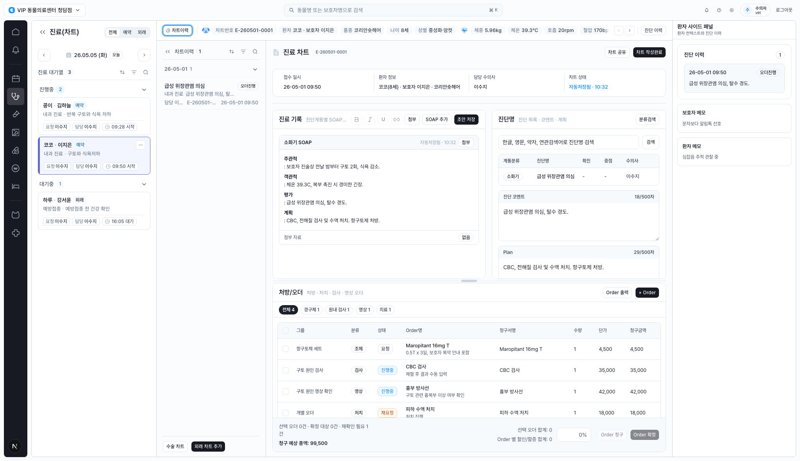
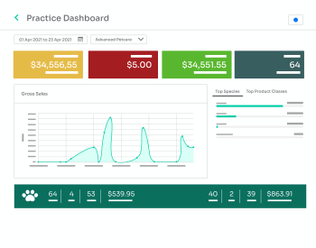
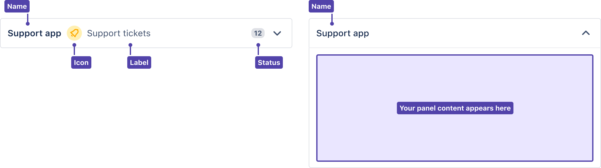
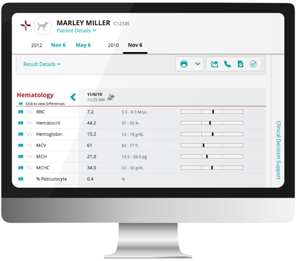
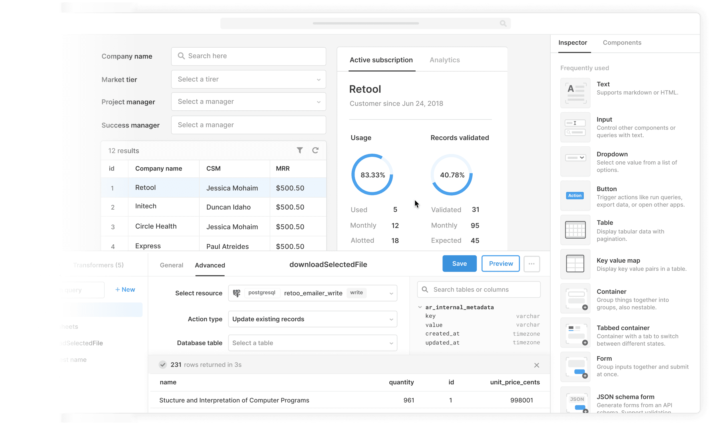
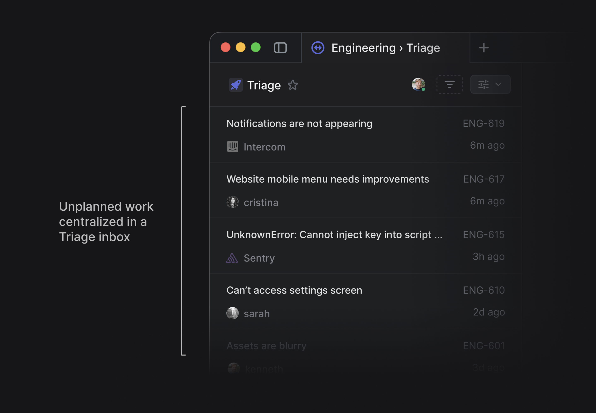

Design Improvement: CLAiR EMR Chart Workspace
The screen is already strong as an operational EMR workspace. The biggest opportunity is to turn the center workspace into a clearer clinical sequence: intake, SOAP, assessment, orders, and completion.
Lazyweb MCP health timed out, so this report uses local screen capture plus web references only.
Current State

Improvement Ideas
1. Make the Visit Header a Clinical Checklist Strip highest impact
Keep the current patient context bar, but compress the lower chart-info card into a horizontal visit checklist: 접수, SOAP, 진단, 오더, 완료.

┌ 환자 콩이 · E-260501-0001 · 09:50 접수 ────────────────────────────┐ │ [접수 완료 09:50] [SOAP 자동저장 10:32] [진단 1] [오더 4 / 재요청 1] [완료 전] │ └──────────────────────────────────────────────────────────────┘
2. Turn the Right Patient Panel Into a Prioritized Context Rail
Make the top of the right rail answer "what can change today's care?" before showing general notes and history.

┌ 환자 사이드 패널 ──────┐ │ 지금 관련됨 3 │ │ ! 탈수 경도 │ │ ! 구토 2회 │ │ i 보호자: 알림톡 선호 │ ├ 진단 이력 1 ──────────┤ ├ 보호자 메모 ──────────┤ └ 환자 메모 ────────────┘
3. Give SOAP and Diagnosis a Shared Clinical Note Rhythm
Visually pair SOAP and diagnosis as one clinical note region. Diagnosis comment and Plan should feel like a continuation of SOAP.

┌ 진료 기록 · 자동저장 10:32 ─────────────┬ 진단 · Plan ─────────────┐ │ SOAP: 소화기 │ 급성 위장관염 의심 │ │ S / O / A / P blocks │ 코멘트 │ │ 첨부 자료 │ Plan │ └─────────────────────────────────────────┴──────────────────────────┘
4. Make the Order Table More Action-Oriented
Strengthen row affordances and let the sticky footer name selected orders before charging or confirming.

┌ 처방/오더 ───────────────────────────────────────────────┐ │ 조제 │ Maropitant 16mg T 보호자 복약 안내 포함 │ │ 검사 │ CBC 검사 채혈 후 결과 수동 입력 │ │ 영상 │ 흉부 방사선 구토 관련 흉복부 이상 확인 │ ├ 선택: Maropitant 16mg T · CBC 검사 합계 39,500 ─────┤ │ [Order 청구] [Order 확정] │ └───────────────────────────────────────────────────────────┘
5. Add a Focus Mode for Active Charting
Add a small focus toggle near the chart header that temporarily narrows side panels and gives SOAP, diagnosis, and orders more room.

┌ nav ┬ chart history collapsed ┬ ACTIVE CHARTING AREA ┬ side rail collapsed ┐ │ │ ◂ │ SOAP + Diagnosis + Orders │ └─────┴─────────────────────────┴──────────────────────────────────────────┘
What's Working
- The screen preserves full visit context without route changes.
- The visual foundation is calm, dense, and operational.
- The anchored order footer is a strong safety pattern.
- The patient context bar already reduces wrong-patient risk.
All References
| Reference | Source | Used For |
|---|---|---|
| current.png | Local CLAiR EMR capture | Current state |
| idexx-neo-dashboard.png | IDEXX Neo | Compact status summaries |
| idexx-vetconnect-results.png | IDEXX Neo features | Clinical result rhythm |
| atlassian-issue-context.png | Jira issue view guidelines | Right contextual rail |
| retool-admin-builder.png | Retool admin dashboard | Table + action surface |
| linear-triage-image.png | Linear Triage docs | Focused active-work mode |